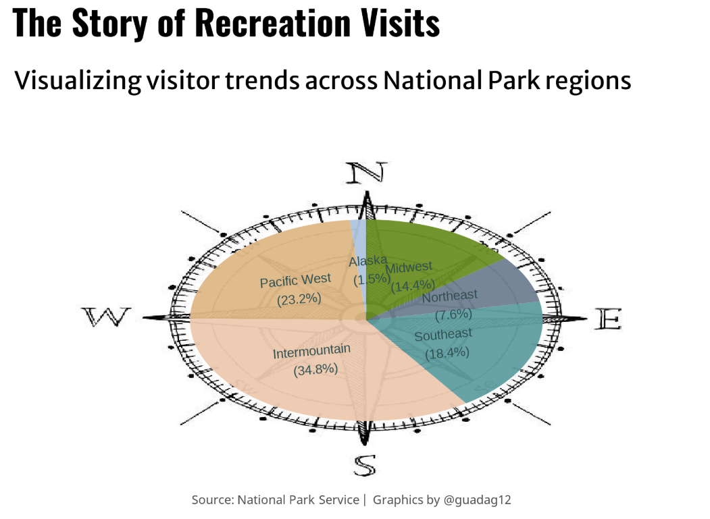

I’ve always been intrigued by how people use their spare time. The contest from the Big Ten Academic Alliance greatly helped me explore this topic using R. I took this opportunity to learn more about time use and discover what I had been missing in terms of visualization techniques.
The plots I created are organized by region, so let’s review which regions belong where on the US Map from the website of Park Chasers:

Now that we can identify regions on the map, let’s start with a pie chart. I know the data science community might disapprove—pie charts (1), but I wanted to experiment with inserting an image as a background and overlaying a plot on it. The compass seems perfect for this. The first plot shows that the most visited parks in 2023 were in the Intermountain (34.8%) and Pacific West (23.32%) regions, which is logical since they include Yellowstone, Grand Canyon, Yosemite, and Olympic National Park. Conversely, the Alaska region, with only 1.5%, features fascinating wilderness areas but is remote, less accessible, and has harsher climates than other continental parks. Let’s look at the plot:

Here’s the code for replication:
Show code
rm(list = ls())
# Load Libraries ------------------------------------------------------------
pacman::p_load(
ggplot2, # Easily Install and Load the 'Tidyverse'
grid, # Improved Text Rendering Support for 'ggplot2'
ggpath, # Using Fonts More Easily in R Graphs
jpeg, # Simple Tools for Examining and Cleaning Dirty Data
magick, # Compact and Flexible Summaries of Data
ggimage, # Scale Functions for Visualization
gganimate, # Make Dealing with Dates a Little Easier
ggtext, # Interpreted String Literals
stringr, # Pixel Filters for 'ggplot2' and 'grid' # Pixel Filters for 'ggplot2' and 'grid'
glue,
htmlwidgets,
webshot
)
# Configuration Plot ------------------------------------------------------
font_add_google("Oswald", "title")
font_add_google("Merriweather Sans", "subtitle")
font_add_google("Merriweather Sans", "text")
font_add_google("Noto Sans", "caption")
showtext_auto(enable = TRUE)
img = "C:/Users/User/Documents/GitHub/guada-blog/_posts/2025-01-05-visualizing-national-parks/plots/compass2.jpg"
fa_path <- systemfonts::font_info(family = "Font Awesome 6 Brands Regular")[["path"]]
font_add(family = "fa-brands", regular = fa_path)
subtitle_text <- str_glue("Although visits started as early as 1904, the NPS has been tracking them monthly since 1979 \n in 63 parks across the USA. In 2023 alone, the different parks received more than 9.2 million visits, \n distributed as shown in the plot.")
caption_text <-paste0("\n \n \n \n Source: National Park Service | Graphics by @guadag12")
region_colors <- c("Alaska" = "#B0C4DE", "Intermountain" = "#EDC9AF",
"Midwest" = "#6B8E23", "Northeast" = "#708090",
"Pacific West" = "#DEB887", "Southeast" = "#5F9EA0")
theme_update(
plot.title.position = "plot",
plot.caption.position = "plot",
legend.position = 'plot',
plot.background = element_rect(fill = bkg_col, color = bkg_col),
panel.background = element_rect(fill = bkg_col, color = bkg_col),
plot.margin = margin(t = 10, r = 20, b = 10, l = 20),
axis.title.x = element_text(margin = margin(10, 0, 0, 0), size = rel(1.1),
color = text_col, family = "text", face = "bold", hjust = 0.5),
axis.title.y = element_text(margin = margin(10, 0, 0, 0), size = rel(1.1),
color = text_col, family = "text", face = "bold", hjust = 0.5,
angle = 90),
axis.text.y = element_text(color = text_col, family = "text", size = rel(0.9)),
axis.text.x = element_text(color = text_col, family = "text", size = rel(0.9)),
axis.ticks.x = element_line(color = text_col), # Show x-axis ticks
panel.grid = element_blank(),
strip.text = element_blank() # Remove strip text
)
region_colors <- c("Alaska" = "#B0C4DE", "Intermountain" = "#EDC9AF",
"Midwest" = "#6B8E23", "Northeast" = "#708090",
"Pacific West" = "#DEB887", "Southeast" = "#5F9EA0")
# Plot --------------------------------------------------------------------
NPData$Region <- factor(NPData$Region, levels = c( "Alaska","Pacific West",
"Intermountain",
"Southeast", "Northeast", "Midwest"))
p <-NPData %>%
group_by(Region) %>%
summarise(total_visit = sum(RecreationVisits)) %>%
mutate(prop = total_visit / sum(total_visit) * 100) %>%
mutate(ypos = cumsum(prop) - 0.7 * prop) %>%
mutate(ypos_mod = case_when(
round(ypos, 1) == 0.450 ~ -10,
round(ypos, 1) == 87.1 ~ 12.9 ,
round(ypos, 1) == 65.3 ~ 28.7 ,
round(ypos, 1) == 53.0 ~ 45.0,
round(ypos, 1) == 40.7 ~ 58.3,
round(ypos, 1) == 11.9 ~ 80.1,
TRUE ~ ypos
)) %>%
ggplot( aes(x="", y=prop, fill=Region)) +
with_inner_glow(
geom_bar(stat="identity", width=0.01, alpha =.95) ,
color = "gray10", sigma = 15
) +
coord_polar("y", start=0) +
theme_void() +
labs(
title = "The Story of Recreation Visits",
subtitle = subtitle_text,
caption = "Source: National Park Service | Graphics by @guadag12"
) +
scale_fill_manual(values = region_colors) +
force_panelsizes(rows = unit(2, "in"), cols = unit(3.5, "in")) +
theme(
plot.background = element_rect(fill = "transparent", colour = NA),
panel.background = element_rect(fill = "transparent", colour = NA),
plot.margin = unit(c(-1.3, 1.7, 0, 0), "cm"),
panel.spacing = unit(c(0.5, 0, 0, 0), "cm"),
legend.position = "none",
plot.title = element_text(family = "title", size = 20, face = "bold", vjust = 13,hjust = -10),
plot.subtitle = element_text(family = "subtitle", size = 9, vjust = 20, hjust = 0.5),
plot.caption = element_text(family = "caption", size = 10, vjust = -15),
)
ggbackground(p + geom_text(
aes(y = ypos_mod, label = paste(Region, "\n (", sprintf("%.1f%%", prop), ")"), group = Region, angle = 10),
size = 2.5,
check_overlap = F,
color = "#2F4F4F", family = "text") , img)
webshot::install_phantomjs(force = T)
webshot("http://localhost:31220/session/preview.html", file = "viewer_screenshot.png")In addition to incorporating a compass into the background, creating this visualization posed a unique challenge: I needed the regions displayed on the compass to align with their actual geographic coordinates. Fortunately, this is a well-known issue, and it can be resolved by setting the correct order for the ‘Region’ variable and converting it into a factor. This method ensures that each region is accurately positioned according to real-world directions:
This first plot helps us to know which National Parks were most visited in 2023. However, it is not enough to understand how people spend their time. What if we use a line plot to observe the evolution of recreational visits to National Parks, differentiated by region?
Inspired by this visualization, the second plot includes this information but with a twist: the names of the parks appear in gigantic letters on the plot and have beautiful images that represents better each region:

This second plot displays the trends in recreational visits (in millions) to National Parks across various U.S. regions from 1980 to 2023. Each line represents a region and shows how visitation has changed over 40 years. Notably, all regions have seen an increase in the number of visitors over the decades, particularly around 2010 and just before the pandemic. The pandemic led to a significant reduction in visits, followed by a rebound, possibly as lockdowns increased people’s desire to spend more time in nature.
For this second visualization, the initial plot was created using R. Afterwards, it was exported to Inkscape, a graphic design software, to add images and enhance its visual appeal. If you are interesting to know, the original plot generated in R looks like this. Here’s the code for replication:
Show code
options(scipen = 999)
rm(list =ls())
pacman::p_load(
tidyverse, # Easily Install and Load the 'Tidyverse'
ggtext, # Improved Text Rendering Support for 'ggplot2'
showtext, # Using Fonts More Easily in R Graphs
janitor, # Simple Tools for Examining and Cleaning Dirty Data
skimr, # Compact and Flexible Summaries of Data
scales, # Scale Functions for Visualization
lubridate, # Make Dealing with Dates a Little Easier
glue, # Interpreted String Literals
ggfx # Pixel Filters for 'ggplot2' and 'grid' # Pixel Filters for 'ggplot2' and 'grid'
)
camcorder::gg_record(
dir = here::here("temp_plots"),
device = "png",
width = 7.5,
height = 5,
units = "in",
dpi = 320
)
### |- resolution ----
showtext_opts(dpi = 320, regular.wt = 300, bold.wt = 800)
# Transformation ----------------------------------------------------------
NPData<- read.csv("https://raw.githubusercontent.com/melaniewalsh/responsible-datasets-in-context/main/datasets/national-parks/US-National-Parks_RecreationVisits_1979-2023.csv")
NPData_groupby <- NPData %>%
group_by(Region, Year) %>%
summarise(total_visits = sum(RecreationVisits))
unique(NPData_groupby$Region)
labels <- tibble(
label = c("", "", "", "", "",""),
player = c("", "", "", "", "",
""),
#label = c("Alaska", "Intermountain", "Midwest", "Northeast", "Pacific West",
# "Southeast"),
#player = c("Alaska", "Intermountain", "Midwest", "Northeast", "Pacific West",
# "Southeast"),
x = c(2000, 2000, 2000, 2000, 2000, 2000),
y = c(0.0001, 0.0001, 0.0001, 0.0001, 0.0001, 0.0001)
)
# Configuration Plot -----------------------------------------------------------
#loadfonts(device = "win") # Usa device = "win" para Windows, "quartz" para Mac, y "cairo" para Linux
bkg_col <- colorspace::lighten('#ffffff', 0.05)
title_col <- "gray20"
subtitle_col <- "gray20"
caption_col <- "gray30"
text_col <- "gray20"
col_palette <- paletteer::paletteer_d("peRReo::don")[c(1:6)]
### |- titles and caption ----
# text
title_text <- str_glue("The evolution of Recreational Visits to National Parks")
subtitle_text <- str_glue("How the number of visits to national parks has evolved over the last 45 years in the US")
caption_text <-paste0("Source: National Park Service | Graphics by @guadag12")
### fonts ----
font_add_google("Oswald", "title")
font_add_google("Merriweather Sans", "subtitle")
font_add_google("Merriweather Sans", "text")
font_add_google("Noto Sans", "caption")
showtext_auto(enable = TRUE)
### plot theme ----
theme_set(theme_minimal(base_size = 14, base_family = "text"))
theme_update(
plot.title.position = "plot",
plot.caption.position = "plot",
legend.position = 'plot',
plot.background = element_rect(fill = bkg_col, color = bkg_col),
panel.background = element_rect(fill = bkg_col, color = bkg_col),
plot.margin = margin(t = 10, r = 20, b = 10, l = 20),
axis.title.x = element_text(margin = margin(10, 0, 0, 0), size = rel(1.1),
color = text_col, family = "text", face = "bold", hjust = 0.5),
axis.title.y = element_text(margin = margin(10, 0, 0, 0), size = rel(1.1),
color = text_col, family = "text", face = "bold", hjust = 0.5,
angle = 90),
axis.text.y = element_text(color = text_col, family = "text", size = rel(0.9)),
axis.text.x = element_text(color = text_col, family = "text", size = rel(0.9)),
axis.ticks.x = element_line(color = text_col), # Show x-axis ticks
panel.grid = element_blank(),
strip.text = element_blank() # Remove strip text
)
# Plot --------------------------------------------------------------------
region_colors <- c("Alaska" = "#B0C4DE", "Intermountain" = "#EDC9AF",
"Midwest" = "#6B8E23", "Northeast" = "#708090",
"Pacific West" = "#DEB887", "Southeast" = "#5F9EA0")
NPData_groupby <- NPData_groupby %>% rename(player=Region)
plot <- ggplot(NPData_groupby, aes(x = Year, y = total_visits)) +
Reference text layer
as_reference(
geom_text(
data = labels, aes(x = x, y = y, label = label),
inherit.aes = FALSE,
family = "title", colour = "gray10", size = rel(10), hjust = 0.5, vjust = 0,
),
id = "text"
) +
geom_area(aes(fill = player, color = player),
alpha = 1, show.legend = FALSE#,
# bw = 25,
# kernel = "epanechnikov"
)+
# Blending the text with the density plot
with_inner_glow(
with_blend(
geom_area(aes(fill = player, color = player),
alpha = 1, show.legend = FALSE#,
# bw = 25,
# kernel = "epanechnikov"
),
bg_layer = "text", blend_type = "xor"
),
color = "gray10", sigma = 15
) +
# Labs
labs(
x = "Year",
y = "Total Visits",
title = title_text,
subtitle = subtitle_text,
caption = caption_text
) +
# Scales
scale_x_continuous() +
scale_y_continuous( labels = label_number(suffix = " M", scale = 1e-6)) +
scale_fill_manual(values = col_palette) +
scale_color_manual(values = col_palette) +
coord_cartesian(clip = "off") +
scale_fill_manual(values = region_colors) +
# Facet
facet_wrap(~player, ncol = 2, scales = "free") +
# Facet
theme(
plot.title = element_text(
size = rel(1.55),
family = "title",
face = "bold",
color = title_col,
lineheight = 1.1,
margin = margin(t = 5, b = 5)
),
plot.subtitle = element_text(
size = rel(0.85),
family = "subtitle",
color = subtitle_col,
lineheight = 1.1,
margin = margin(t = 5, b = 5)
),
plot.caption = element_markdown(
size = rel(0.50),
family = "caption",
color = caption_col,
lineheight = 1.1,
hjust = 0.5,
halign = 1,
margin = margin(t = 5, b = 5)
)
)
plotIn conclusion, it is wonderful to see that more people are spending their time outside and this exploration is critical during 2010 and after the pandemic, as it created a new necessity of connecting more with nature.
Last but not least, I want to share with you a a photo of me after a 4-hour, 14-km trek at the Otto Meiling Refuge in Nahuel Huapi National Park, Argentina: